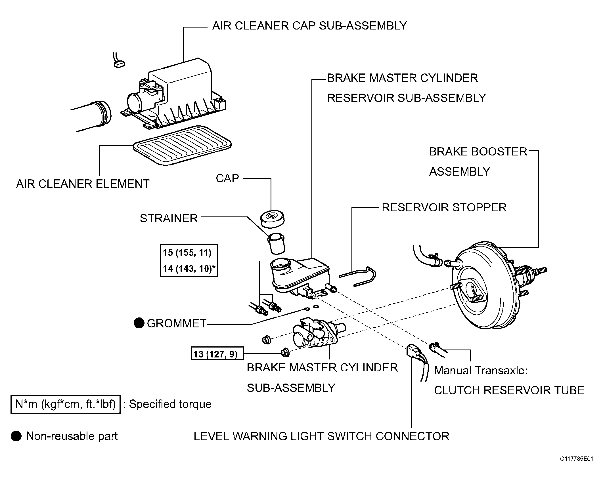

Home
>>
Scion
>>
2006
>>
xB Standard
>>
Repair and Diagnosis
>>
Brakes
>>
Mechanical - Hydraulic
>>
Brake - Base
>>
Brake Master Cylinder
>>
Components
Brake Master Cylinder: Components
Fig 1: Identifying Brake Master Cylinder Components

Courtesy of © TOYOTA, LICENSE AGREEMENT TMS1002